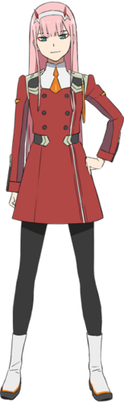
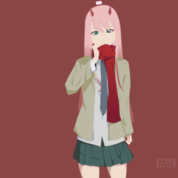
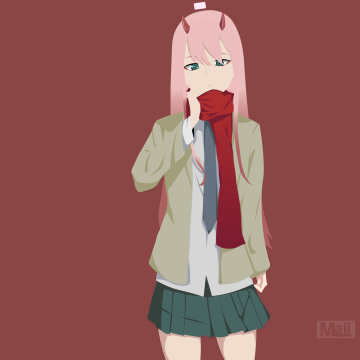

|  |
ZERO TWO ❤️Zero Two (ゼロツー, Zero Tsū) is the main heroine and the deuteragonist of DARLING in the FRANXX. She is a human-klaxo sapien hybrid and a member of the APE Special Forces, primarily fighting on the front lines. As an elite Parasite with the codename "002", also known as the "Partner Killer", Zero Two had always accepted solitude due to her horns and Klaxosaur blood. Despite having no regard for human life or her own and being accustomed to fighting solo, she took interest in Hiro and offered an opportunity to pilot with her, making him her new partner and "darling". After Hiro was able to ride with her more than three times, the pair became the 13th Plantation's newest members, piloting the powerful FRANXX Strelizia. A thousand years later, Hiro and Zero Two's souls reincarnate as a pair of children that meet each other again and rekindle their romance. |
 
